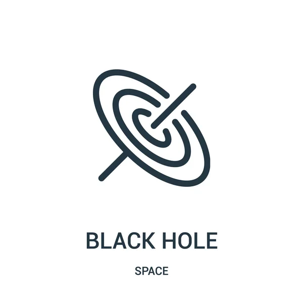

MINI-WIKI 
Salve utente!
Ti do il benvenuto nella mia mini wikipedia. Al momento ti trovi nella home del sito.
Questa pagina contiene tre argomenti scelti da me tra i miei hobby e argomenti preferiti!
Sentiti libero di consultare le pagine cliccando sui link di tuo interesse.
Ciascuno di essi ti porterà a una pagina dedicata e per tornare alla home ti basterà cliccare sull'icona del globo situata accanto al nome del argomento.
Quantum Computing
Computer quantistico
Black Hole

Buco Nero
Peregrine Falcon
Falco Pellegrino